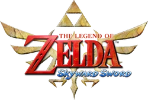

- introduction
- Début de la chronologie
- Branche de Link enfant
- Branche de Link adulte
- Branche du héro déchu
- Breath of the wild et Tears of the kingdom
Début de la chronologie
The Legend of Zelda: Skyward Sword se déroule aux origines de la saga Zelda. L'histoire commence dans le royaume céleste d'Hyrule, où Link, un jeune héros, est un membre de l'Académie des Chevaliers. Il rêve de devenir un grand chevalier comme son ami d'enfance, Zelda, qui est la réincarnation de la déesse Hylia. Un jour, un événement tragique se produit : Zelda est enlevée par un mystérieux être nommé Groose. Pour la sauver, Link doit plonger dans le monde en dessous des nuages, un royaume souterrain rempli de dangers. Il découvre que le maléfique démon, Demise, cherche à s'emparer de la déesse Hylia et de la Triforce, une source de pouvoir immense. Link est guidé par la déesse, qui lui confère l'Épée de la Lumière, une arme capable de vaincre Demise. Au cours de son voyage, Link explore divers environnements, résout des énigmes et affronte des ennemis tout en apprenant à maîtriser le combat à l'épée grâce à des mouvements de balayage. Finalement, après de nombreuses épreuves, Link affronte Demise dans un combat épique, révélant les racines des conflits qui perdureront à travers le temps dans la saga Zelda. L'histoire se termine avec Link et Zelda établissant le fondement d'Hyrule, marquant le début de la légende.
The Legend of Zelda: The Minish Cap suit Link, qui doit sauver le royaume d'Hyrule menacé par un sorcier maléfique, Vaati. L'histoire commence lorsqu'une mystérieuse casquette magique, le Minish Cap, permet à Link de rétrécir et d'explorer des endroits inaccessibles. Avec l'aide de son ami Ezlo, qui est également le Minish Cap, Link doit rassembler les fragments de la lumière pour réveiller la déesse et vaincre Vaati, qui a transformé la princesse Zelda en pierre. Au cours de son aventure, Link découvre des donjons, résout des énigmes et combat divers ennemis, tout en apprenant à maîtriser de nouvelles capacités. Finalement, Link réussit à restaurer la paix à Hyrule en vainquant Vaati et en libérant Zelda, consolidant ainsi son rôle de héros légendaire.